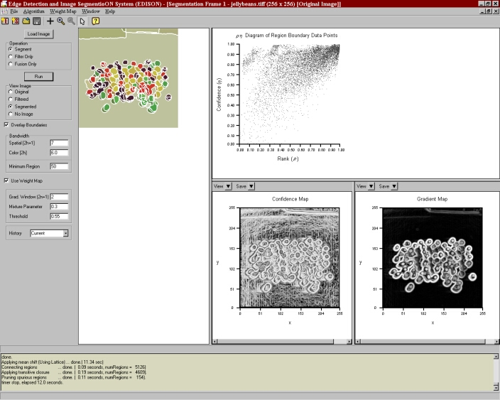
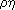

This program implements the image segmentation algorithm described in [3].
Synergistic image segmentation is performed by following a similar procedure to that of mean shift based image segmentation . Please consult this help file for a general overview of the segmentation program.
Using Edge Information
To perform synergistic image segmentation select the Use Weight Map checkbox and run the segmentation algorithm. A -diagram containing the region boundary data points is displayed in the upper right hand portion of the segmentation window. The confidence and gradient maps produced by the confidence based edge detector are also displayed in the lower right hand portion. The confidence, gradient, derived and custom weight maps may be viewed in each sub window by checking the appropriate item from their View menus.
Edge Map Parameters
As described in [3], three parameter are required as additional input to the synergistic segmentation algorithm: the gradient window radius, the mixture parameter, and the edge strength threshold. These parameters may be adjusted from the segmentation window options panel. The threshold and blending parameter may take on any real value greater than or equal to zero and less than or equal to one. The gradient window radius (r) may take all positive integer values and specifies a window of size (2r+1)x(2r+1) used for the computation of the gradient and confidence maps. If a negative value is entered for either of the parameters and/or zero is entered for the gradient window radius, an error will be flagged and the segmentation will not occur. If a positive real value is entered for the gradient window radius, it will be rounded to the nearest integer prior to segmentation.
Specifying a Custom Weight Map
A custom weight map may be loaded by selecting Weight Map and then Load custom weight map from the file menu, or by simply pressing Shift-M. A weight map is generated by assigning a value from 0 to 1 to each image pixel and is specified as a one dimensional floating point array of length (height x width), saved as a MATLAB '.dat' file in ASCII format. The weight map is specified to have a value of 0 at an edge and 1 away from an edge. To use the custom weight map select Weight Map, then Use custom weight map from the file menu.
Saving Edge Information
The gradient, confidence, and derived weight maps may be saved from either image map sub window located in the lower left portion of the segmentation window. The desired map may be saved by checking the appropriate item from the Save menu of either subwindow.